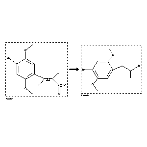

 |
| FA | RX(1); FLST(1); RX(1) |
Reaction (1 of 1)
| Reaction ID | 2048959 |
| Reactant BRN | 1980835 |
| Reactant | 1-(2,5-dimethoxy-4-bromophenyl)-2-nitropropene |
| Product BRN | 2807278 |
| Product | 1-(2,5-dimethoxy-4-bromophenyl)-2-aminopropane |
| No. of Reaction Details | 1 |
Reaction Details (1 of 1)
| Reaction Classification | Preparation |
| Yield | 53 percent (BRN=2807278) |
| Reagent | AlH3 |
| Solvent | tetrahydrofuran |
| Time | 6 hour(s) |
| Other Conditions | Ambient temperature |
| Citation Pointer | 5745593; Journal; Glennon, Richard A.; McKenney, J. D.; Lyon, Robert A.; Titeler, Milt; JMCMAR; J.Med.Chem.; EN; 29; 2; 1986; 194-199; |
Reference (1 of 1)
| Citation Number | 5745593 |
| Document Type | Journal |
| Authors | Glennon, Richard A.; McKenney, J. D.; Lyon, Robert A.; Titeler, Milt |
| CODEN | JMCMAR |
| Journal Title | J.Med.Chem. |
| Language Code | EN |
| (Series) Volume | 29 |
| Number | 2 |
| Publication Year | 1986 |
| Page | 194-199 |